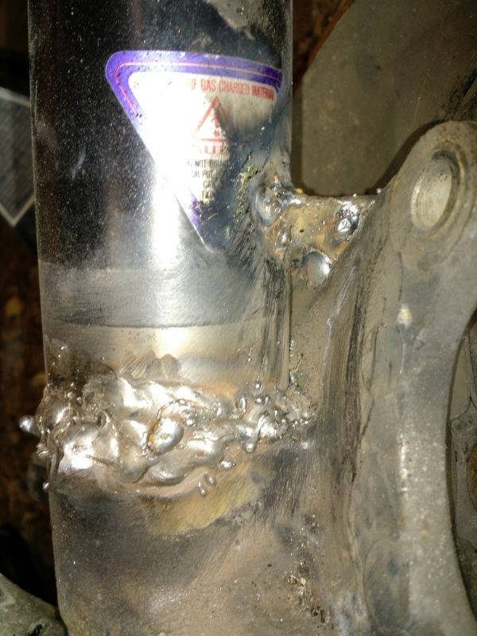
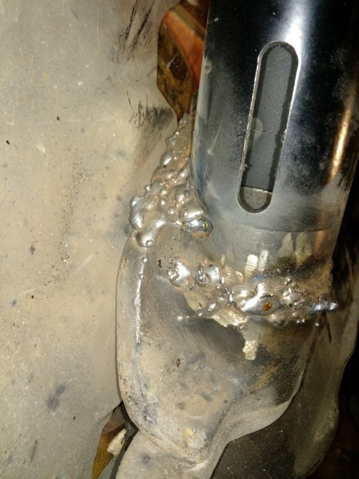
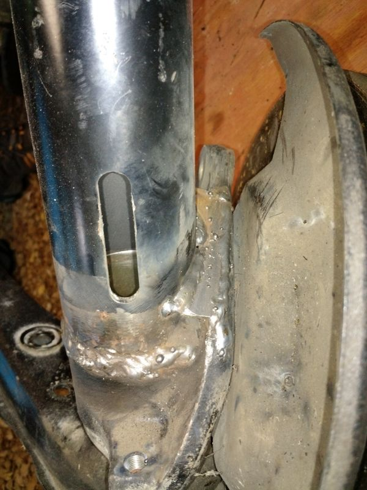
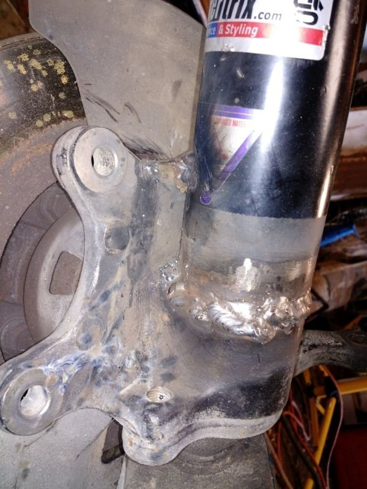

-
Jeez, that was some real bird poop welding.
The ones I've done, I've cut that inner stub (the part that probably saved your life when the weld broke) so it sits level with the interior bevel of the adapter once installed. Then I also weld that inside there, reaching in with a stick welder. If you do this along with a gusset, it's pretty impossible for it to break.sigpic -
Raven, how did you make out?87T, My build thread http://z31performance.com/forum/z31-…lee-s-87t-rb26 -
Sorry guys I've been in class all week. Spent the whole weekend working on the Z so I had to rush to get papers written. Barely had time to breathe this week. I'm most likely going to start welding tomorrow. Only think I have to do it some light clean up on the coilover that didn't break to get it ready to weld the gusset. I also have to get some more cutting disks. Chewed through what was apparently our last one before I could get the fully cut.
G-E, yeah I'm going to be super careful with the alignment.
Butter, thanks for that information. I agree, the length we left it at is what saved me from major damage.
One thing of note that just occurred to me. What wire should I be using in the MIG? I noticed that the machine is loaded with what appears to be copper colored wire.私♥フェアレディ・ゼット
・1984 300zx N/A -
Raven, please look at some welding videos online to help understand what is what. The copper coated wire is mig wire and should be fine for your need.
The copper coating protects the wire from rusting.87T, My build thread http://z31performance.com/forum/z31-…lee-s-87t-rb26 -
ER70S-6 with Argon/CO2 mix. I hope you're not using flux core.
I've also stick welded them with special rods for cast repairs like Radnor Cast99. They are pricey and stick welding isn't for novices however. I use that same rod for welding cracked exh manifolds and wg flanges too.
The tube isn't cast tho, so you can hit that with your standard E7018 or 6013 stick if you want to do what I said earlier.sigpic -
^verify solid core (usually is the copper washed like you see) and it requires use of shielding gas 25%/75%. and make sure the size of the wire suits your welder, and the size of the materials you're working with.Damn dirty angels....these cars!
Current Daily Driver - 86 Turbo.
Under the cover - THE BANANA… that needs to be re-energized.
sigpic -
Got a late start today but I did get my gusset plates made. I also verified that the wire in the welder is ER70S-6, wire size is .030. Everything looks good to go on welding. Just have some last minute wire wheel work before I start to clean off some surface rust from the weather we've had.
Butter, there's a gap between my inner tube and the adapter due to the length of the inner tube. Would it still be fine to hit it with the stick welder? Not necessarily to make a full weld but just a few spot welds. Would that even make a difference?私♥フェアレディ・ゼット
・1984 300zx N/A -
With the gusset there's no real need, but you'll want to cut the tubes down to a max of 1cm tall either way, the rest is just dead weight -
I would leave some length on the tube. You biggest strength is from penetrating the strut tube, plus it aligns everything nicely.86na - BlueZ
Shiro #366 - Kouki Monster
85t - Mr Tickles -
Yeah, I plan on leaving them the length they are. I'm really not concerned with the dead weight and I fully believe the length attributed to them not coming completely apart when the welds failed. I hope they never fail again…but just in case I would like to have that failsafe. I realize that catastrophic failure is always a chance but knowing it was what saved me before leads me to want to keep them how they are.私♥フェアレディ・ゼット
・1984 300zx N/A -
The tradeoff is the bottom of the damper will bottom out on the strut limiting how low you can go.
In the past this was an issue due to damper length but I pretty sure it has been addressed. I have not measure the damper free lengths in a while to see the evolution86na - BlueZ
Shiro #366 - Kouki Monster
85t - Mr Tickles -
Well, I got them welded. One side is not pretty at all, well neither are amazing welds but there are no pinholes and I made sure to make two passes.
Here's the first side that I welded. I believe this was the side that I didn't completely separate so that could also have played a part in the messy welds. I believe it was from not preheating the metal well enough. Gusset is messy due to me having some issues with wire feed.


This side I made sure to really preheat the parts. I also seemed to fix my wire feed issue I was having on the gusset from the first one.


So…how did I do? Like I said I'm no welder but I think these look pretty good all things considered. They seem like they will hold.私♥フェアレディ・ゼット
・1984 300zx N/A -
I am no professional to be honest I have never even used a welder but I know lots of welders and seen a lot of there work. To me it looks like you need more heat and less wire. Although what you have there looks like it is good enough to drive on next time you may want to preheat more and turn the wire feed down. Once again I may be totally wrong on this but that is what it looks like to me. -
Raven: the welds on the spindles appear to lack penetration, without going into to much theory. I would suggest you grind off all of the welds and try again. Prep Prep Prep its more important than the actual weld. The spindle is under stress and need to have a sound strong weld.
The purpose of beveling the metal is to help with penetration, I would assume your welder is only 120V(plugs into a standard wall socket) so prep and preheat with mutiple passes is even more important.
Did you watch any videos on yourtube?87T, My build thread http://z31performance.com/forum/z31-…lee-s-87t-rb26 -
I don't believe I could have prepped that any better than I did. Like I said, preheat could have been an issue on the first one that I did but I don't see where you can tell wether the spindle got penetration or not. Also there is no way possible that I can grind that all down, clean it up AND re-weld it before tomorrow.
Metal was bevelled, welder is 220V, this are with multiple passes. I didn't go all Ghostbusters with the welder and leave it at one pass. The first pass looked really good to me but as I didn't have 100% penetration on my test pieces with the same welds (I mean how uniform they looked) I made sure to make multiple passes to be on the safe side.私♥フェアレディ・ゼット
・1984 300zx N/A

Copyright © 2006–. All rights reserved. Privacy Policy